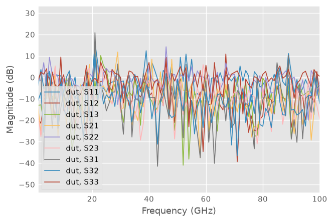
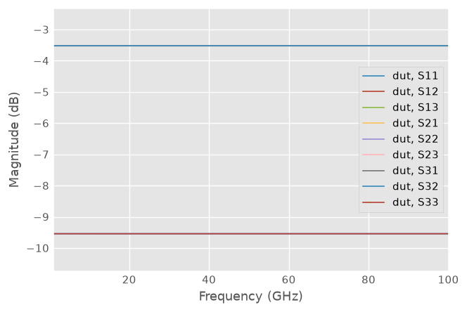

Multi-port calibration#
This example demonstrates how MultiportSOLT calibration class can be used to calibrate multi-port S-parameter measurement with three or more ports.
Setup#
[1]:
import numpy as np
import skrf
from skrf.calibration import SOLT, MultiportCal, MultiportSOLT, UnknownThru, terminate_nport
from skrf.frequency import Frequency
from skrf.media import Coaxial
from skrf.network import connect, twoport_to_nport
skrf.stylely()
Creating synthetic data#
First we create a synthetic error network.
[2]:
freq = Frequency(1,100,100, unit='GHz')
nports = 3
# 1.0 mm coaxial media for calibration error boxes
coax = Coaxial(freq, z0_port=50, Dint=0.44e-3, Dout=1.0e-3, sigma=1e8)
# Create random error network
# First 'nports' ports will connect to an ideal VNA
# and the last 'nports' ports will connect to the DUT.
Z = coax.random(n_ports = 2*nports, name = 'Z')
# Zero leakage terms in the error network.
port_type = lambda n: 'VNA' if n < nports else 'DUT' # noqa: E731
port_number = lambda n: n if n < nports else n - nports # noqa: E731
for i in range(2*nports):
for j in range(i+1, 2*nports):
# No connection between different VNA/DUT ports.
# No connection between VNA and DUT ports with different number.
if port_type(i) == port_type(j) or port_number(i) != port_number(j):
Z.s[:,i,j] = 0
Z.s[:,j,i] = 0
# VNA switch terms. This is the termination impedance of each port
# when the source is not connected to that port.
gammas = []
for i in range(nports):
gammas.append(coax.random(n_ports=1, name=f'gamma_{i}'))
Function for measuring a network through the error network. Simply connects error network to DUT network and adds the termination impedances.
[3]:
def measure(ntwk, Z, gammas, nports):
out = terminate_nport(connect(Z, nports, ntwk, 0, num=nports), gammas)
out.name = ntwk.name
return out
Next, create calibration standards. They should be multi-port networks. With real VNA measurement it might be necessary to manually combine two-port standard measurements to N-ports.
The required standard are open, short and match on each port and thru measurement from the first port to all the other ports.
[4]:
o = coax.open(nports=nports, name='open')
s = coax.short(nports=nports, name='short')
m = coax.match(nports=nports, name='load')
thru = coax.thru(name='thru')
ideals = []
# nports-1 thrus from port 0 to all other ports.
for i in range(1, nports):
thru_i = twoport_to_nport(thru, 0, i, nports)
ideals.append(thru_i)
ideals.extend([o,s,m])
measured = [measure(k, Z, gammas, nports) for k in ideals]
Device to test the calibration. A simple three-way junction. Because error network is randomly generated and have very high reflections, the plotted S-parameters of the uncalibrated network are unrecognizable.

Calibration#
Create MultiportSOLT calibration class. The first parameter is a two-port calibration method that the class uses for calibrating the multi-port. In this case we use simple SOLT calibration. Other possibilities are for example UnknownThru and LRRM. Note that different calibration algorithms might require standards to be given in specific order and might require additional inputs such as switch_terms. Refer to the two-port calibration documentation for the required inputs.
[6]:
cal = MultiportSOLT(method=SOLT, measured=measured, ideals=ideals)
Calibrate the DUT and plot the calibrated S-parameters.
[7]:
dut_cal = cal.apply_cal(dut_meas)
dut_cal.plot_s_db()

The difference between corrected and original dut S-parameters should be small.
[8]:
np.float64(1.7103951918005778e-06)
MultiportCal#
The above MultiportSOLT class can only be used for SOLT style two-port calibrations that require only one transmissive standard between the two ports. Multi-port TRL requires thru and one or more lines between the ports which doesn’t fit the above class interface. Also if for some reason different two-port calibration methods should be used for the port pairs the MultiportSOLT class is not able to do it. For those cases there is a lower level MultiportCal.
This calibration requires dictionary of port pairs as input. ‘method’ key is the two-port calibration class and ‘measured’ are the measured networks. They can be either two-ports or N-ports. Other keys are passed to the two-port calibration routine. In this case we are using UnknownThru class which requires additional switch_term arguments. Note that two-port switch terms are in the reverse order from multi-port switch terms. Two-port switch terms are listed in the order of where the
source is connected, but this is unspecified in case of multi-port switch terms and they are listed in the order of which port they terminate. It’s also important to list the ideals and measured networks in the correct order required by the two-port calibration. UnknownThru assumes that thru should be listed last and order of the other standards doesn’t matter.
[9]:
ideals_01 = ideals[2:] + [ideals[0]]
ideals_02 = ideals[2:] + [ideals[1]]
meas_01 = measured[2:] + [measured[0]]
meas_02 = measured[2:] + [measured[1]]
cal_dict = {(0, 1): {'method': UnknownThru, 'ideals': ideals_01,
'measured': meas_01, 'switch_terms':[gammas[1], gammas[0]]},
(0, 2): {'method': UnknownThru, 'ideals': ideals_02,
'measured': meas_02, 'switch_terms':[gammas[2], gammas[0]]}}
cal2 = MultiportCal(cal_dict)
dut_cal2 = cal2.apply_cal(dut_meas)
dut_cal2.plot_s_db()

[ ]: